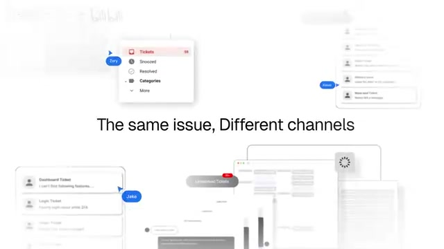
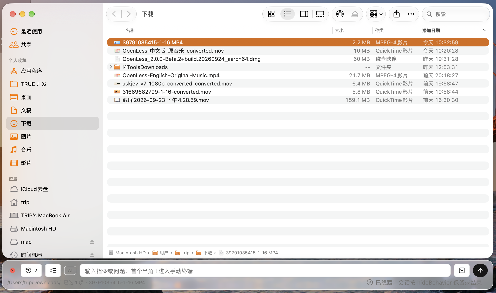
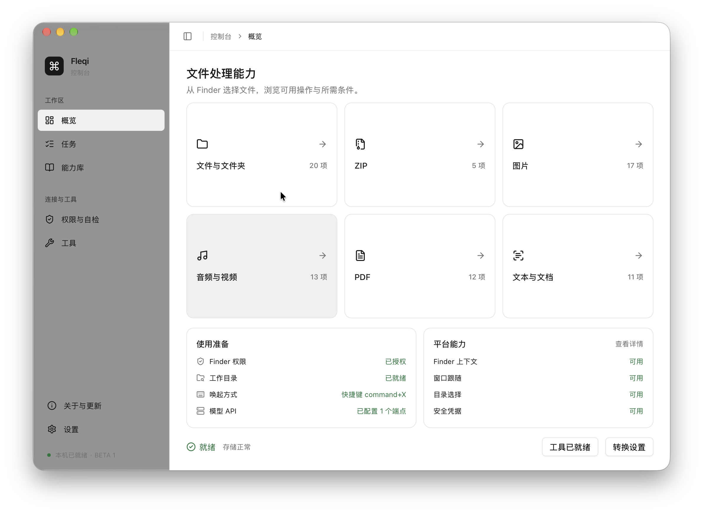

选好文件。说一句，开始做。
用原片的镜头和节奏，讲清 Finder 上下文、AI 执行与真实终端。
95.27s · 29 镜头中文 / 英文独立版 · 1080p · 30fps
REFERENCE ONLY
用户提供的原片
用户提供的原片
左侧是原片；右侧是拟定的 Fleqi 文案与画面。点击下方任一镜头可切换对照。

FLEQI PLAN
中文画面文案
- 真实画面
- 镜头动作
- 声音
- 待录素材
拍摄核验：
你的真实界面，作为拍摄依据
两张原始截图已保留。最终演示从当前 App 重录，保留真实交互和结果。


Finder + 输入条 · 主演示 S06–S11 的构图依据


控制台概览 · 能力范围 S22 的构图依据
完整时间线
缩略图均为原片。点击查看 Fleqi 替换方案。